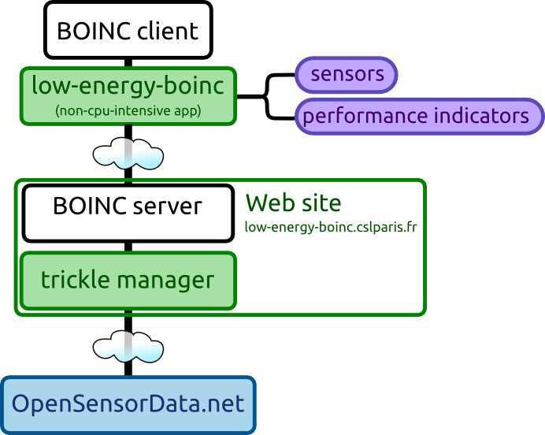

We developed a BOINC application that gathers data from participating machines. When a volunteer registers to the low-energy BOINC project (not yet possible at the time of writing), a non-cpu-intensive BOINC application is downloaded and run on the volunteers PC. This application gathers information about the performance, the energy use, and the environment and uploads it to the server.
Below you can get an idea of how the pieces fit together. All the data is uploaded to OpenSensorData.net, but can be viewed online on this site in your account section.

The data that we are interested in includes:
| Variable | Explanation | Measurement period |
| Power usage | Understanding the power usage of DG computers is the main target of our study. We aim at measuring the instantaneous energy consumption to obtain a dynamic profile of the machine. | 1 sec |
| P-state | The CPU can be in one of several performance states (P-state). With each P-state is associated a different clock-frequency (and voltage) but also a different power consumption. It is therefore an important to trace the active P-state to evaluate the performance/energy ratio of a machine. | 15 sec |
| CPU load | The CPU load indicates the percentage of time that the CPU is running processes. All activities are accounted for, including system services, BOINC processes, and user applications. Inversely, it allows measuring the percentage of time that the machine is idle. | 5 sec |
| CPU load of BOINC applications | This is the percentage of time that the CPU is used by BOINC applications. | 5 sec |
| Progress of BOINC workunits | Monitoring the progress of the computation helps us estimate the performance of the machine, taking into consideration the BOINC settings such a CPU throttling. | 1 min |
| CPU load of user applications | This is the percentage of time that the CPU is used by user applications. It allows to have an idea how much the CPU is actually used by the user. | 5 sec |
| CPU benchmark | This is a non-dynamic variable that is already measured by the BOINC framework using the Drystone/Whetstone benchmarks. It is used to compute the FLOPS/Watt of the machine. | - |
| BOINC CPU% | Another non-dynamic variable that is important to know to interpret the results. | - |
| Ambient temperature | The ambient temperature measure the room temperature of the machine. When combined with meteorological information of the location, it gives us an indication of whether the room is being heated or cooled. | 15 min |
| User absent or not | When the user is present and working on the machine, the energy consumption can be accounted differently. On Linux, this variable is derived from the CPU load of the user applications. | 1 min |
| Fan speed | The fan speed gives us a further indication of how intensively a machine is used. It also gives feedback on whether the machine has entered a regime in which a high CPU becomes disturbing for the user. | 5 sec |
| CPU temperature | Similar to the fan speed, the CPU temperature gives an indication on how the machine reacts under intensive use. | 5 sec |
| Other | Some chips (memory controllers, I/O chips) in the machine have other sensors (like temperature) that may be accessible. | - |